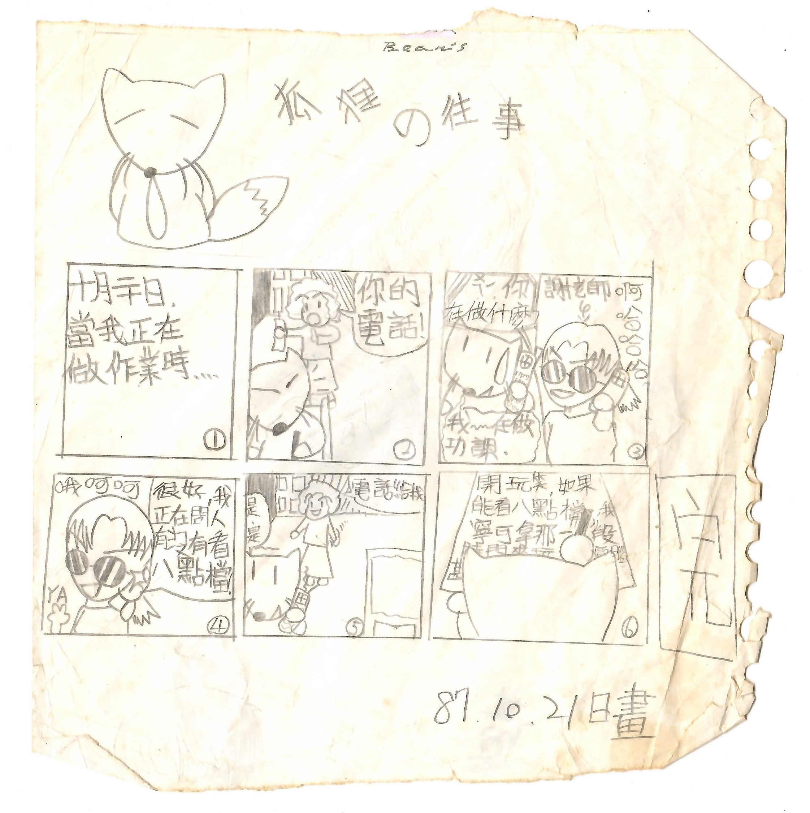
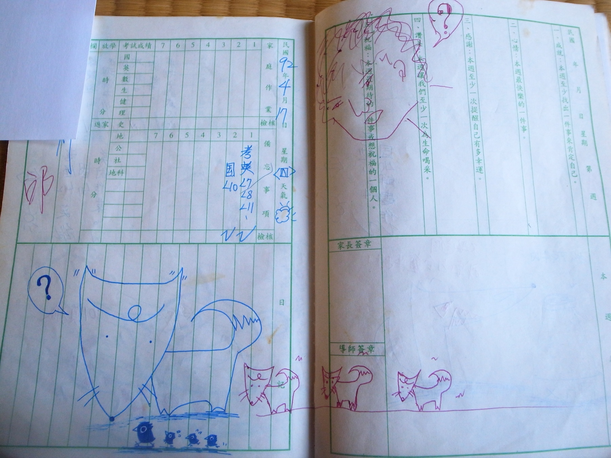
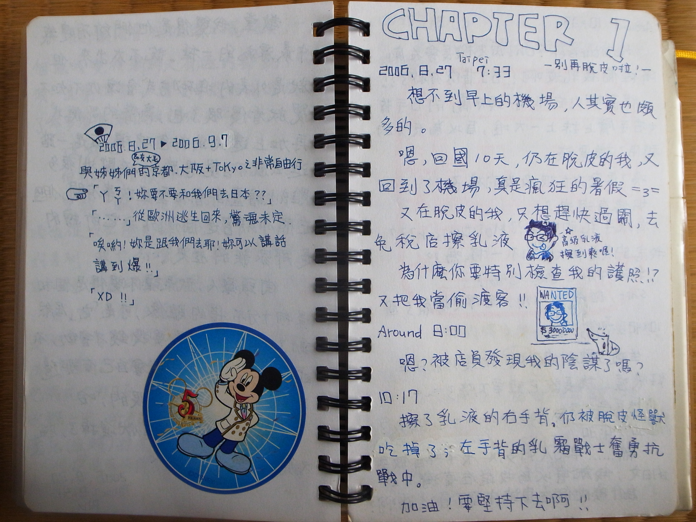
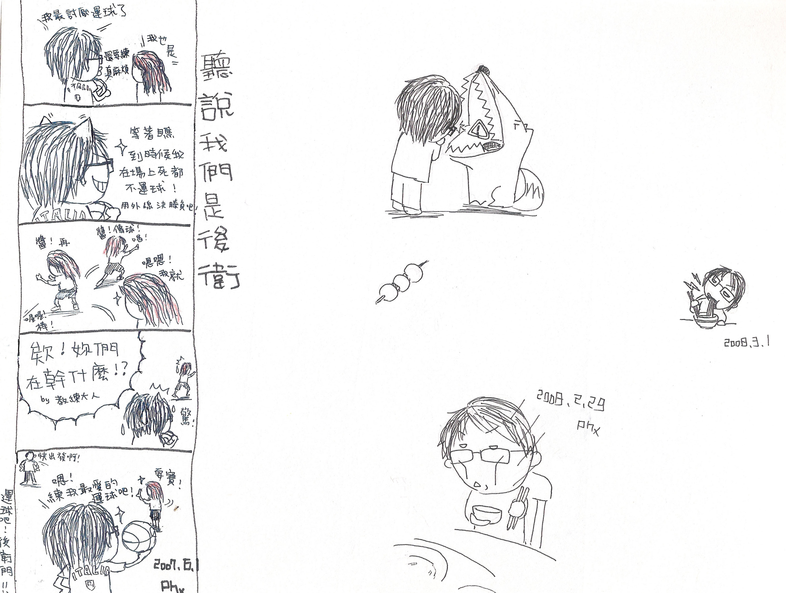
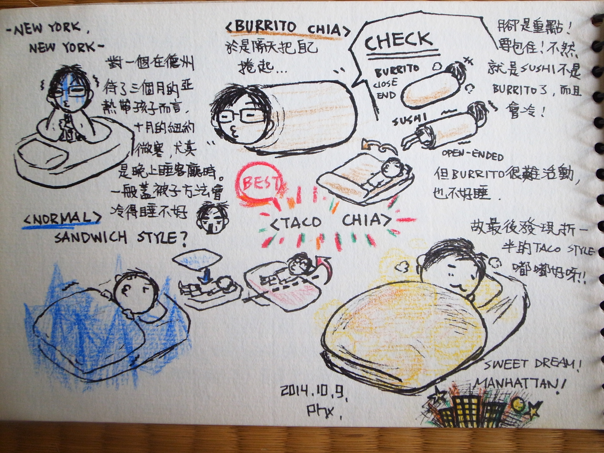
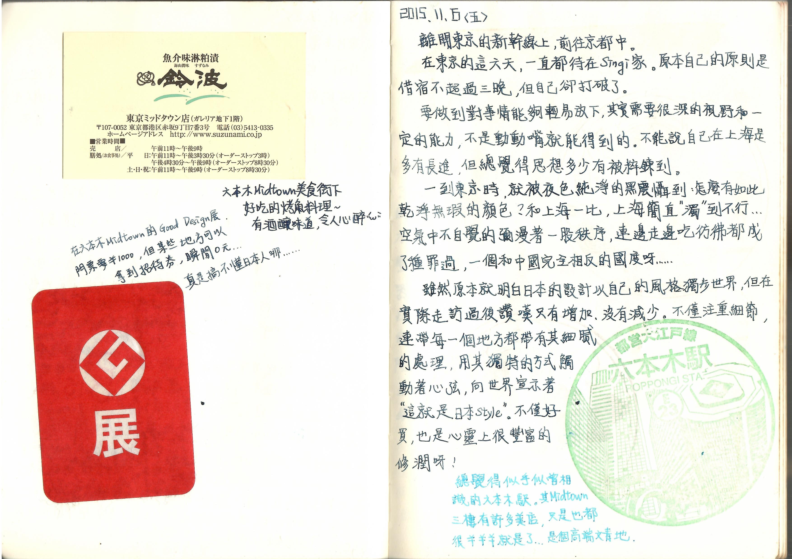

1998
The beginning
Placeholder caption — one short line about where this started. Replace with the real note later.

2003
School notebooks 聯絡簿
Placeholder caption — margins of the communication book, drawn between assignments.

Interested to see more? Visit my Patreon
2006
Travel journals
Placeholder caption — notebooks carried on trips; quick records of places and the way they looked.

2008
High school
Placeholder caption — a short line about this period goes here. One or two lines, no more.

2014
A quiet middle stretch
Placeholder caption — fewer pages through these years, but never quite stopped.

2015–2025
Still going
Placeholder caption — the practice now; the most recent pages in the drawer.
